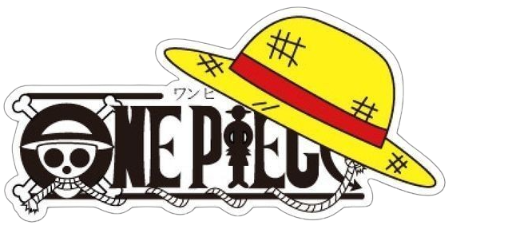
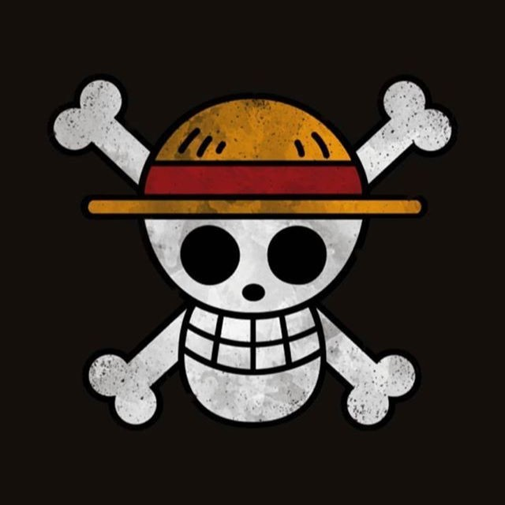
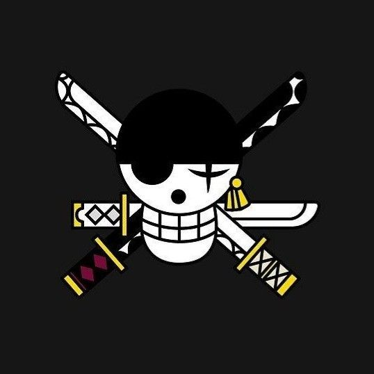
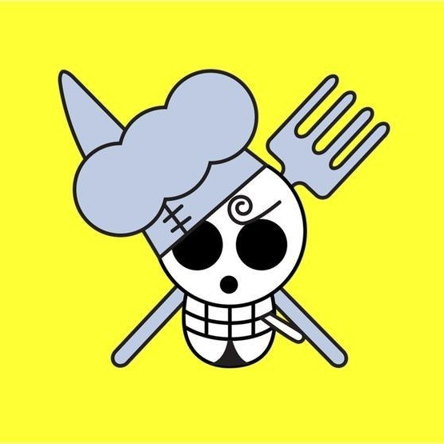
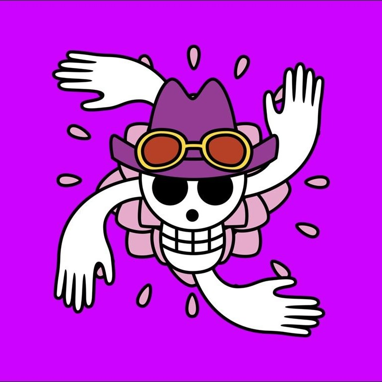
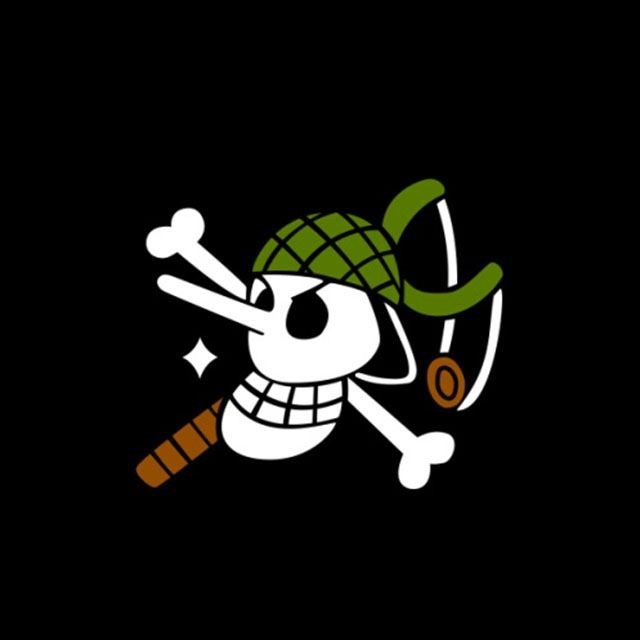
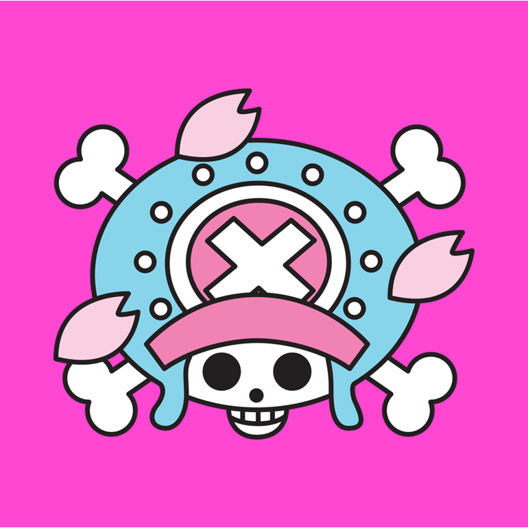
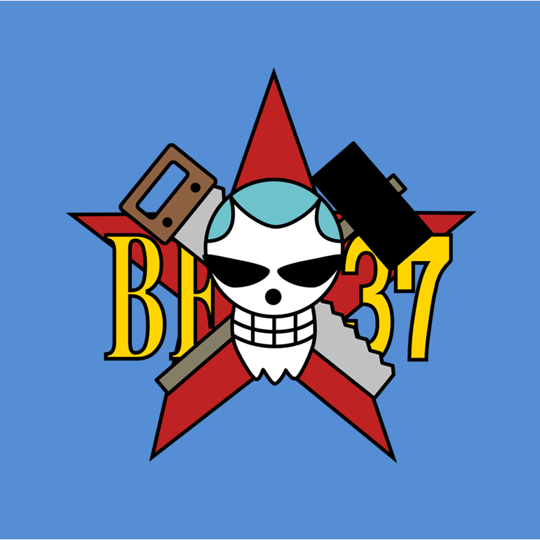

Monkey D. Luffy
Também conhecido como "Luffy do Chapéu de Palha", é o fundador e capitão dos cada vez mais infames e poderosos Piratas do Chapéu de Palha, bem como o mais poderoso de seus melhores lutadores. Ele deseja encontrar o tesouro lendário deixado para trás pelo falecido Gol D. Roger e assim se tornar o Rei dos Piratas, o que ajudaria a facilitar um sonho desconhecido dele que ele contou apenas para Shanks, seus irmãos e tripulação. Ele acredita que ser o Rei dos Piratas significa ter a maior liberdade do mundo.






